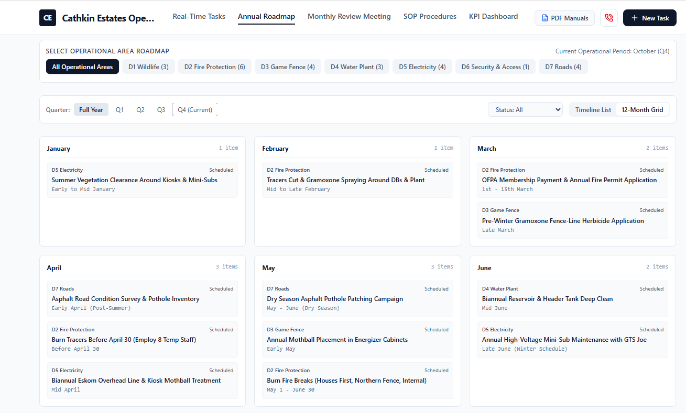

Executive Alignment on Audit Findings, Proposed Organisational Framework, Financial Authority Delegation & Infrastructure Oversight
Note: Some of the corrective actions are in progress of being implemented. The systems and processes have been developed and are currently in a pilot phase.
Prepared for: Board of Directors
Date: October 2026
Resolving Management Misalignment and Restoring Fiduciary Due Diligence (Pilot Phase in Progress)
Finding 3: Misuse of Board Voting Mechanisms to Suppress Due Diligence and Alignment
Observation: The Board has relied on divisive majority voting (e.g., forcing through a 4/7 vote on the workshop solar system) to drive capital decisions, rather than addressing and aligning with the technical, operational, and financial concerns raised by individual directorship/committee roles.
Impact & Best Practice Breakdown: In corporate governance and non-profit directorship, resorting to contentious majority voting to steamroll legitimate objections represents bad business practice. Under Section 76 of the Companies Act 71 of 2008, directors and committee members have an individual statutory duty of care and due diligence that cannot be overridden or erased by a majority vote. Forcing votes without consensus erodes board alignment, marginalises specialised portfolio expertise (such as Finance, ARC and Operations), and exposes the board to liability for unvetted capital deployment. Board decision-making should prioritise consensus and alignment, reserving formal voting purely as a procedural last resort.
Finding 2: Structural Breakdown of Portfolios, Non-Functional Operations Committee, and Management Misalignment
Observation: Despite procedural frameworks outlining an Operations Committee, the committee has been non-functional, leaving operational oversight uncoordinated.
Weak Governance & Management Misalignment: The Estate Manager has bypassed portfolio alignment by putting forward operational items and voting motions directly to the Board without coordinating with the newly appointed Operations Director. Historically, operational governance failures occurred when groundstaff lunch hours were improperly scheduled outside contractual parameters (permitting a 1-hour lunch instead of a 30-minute break, resulting in a deficit of 3.75 hours per employee weekly). Subsequent attempts to correct and adjust these operational measures were similarly pushed forward by bypassing portfolio alignment and failing to consult or align with the Operations Director.
Finding 1: Absence of a Delegation of Authority (DoA) Matrix and Limited Committee Scope
Observation: While a Finance Committee existed during this period, its operational focus was restricted to debt management rather than comprehensive financial governance, and no formal Delegation of Authority matrix existed. Consequently, the Chairperson unilaterally approved estate expenditures.
Impact: Concentrating financial authorisation in a single individual without structured operational oversight violated standard non-profit governance principles and created an environment prone to unvetted, arbitrary, and high-risk spending.
Section 76 of the Companies Act 71 of 2008: Section 76(3) Subject to subsections (4) and (5), a director of a company, when acting in that capacity, must exercise the powers and perform the functions of a director— (a) in good faith and for a proper purpose; (b) in the best interests of the company; and (c) with the degree of care, skill and diligence that may reasonably be expected of a person— (i) carrying out the same functions in relation to the company as those carried out by that director; and (ii) having the general knowledge, skill and experience of that director.
Aligned with Policies, Procedures & Operations Manual (Showing Exact Reporting and Liaison Flows)
This chart illustrates direct solid reporting from the Board Chair to the HOA Administrator, solid direct reporting from the Operations Chair to the Estate Manager, and dashed liaison connections between the Estate Manager and both the ARC and Finance portfolios.
Defined per Section "Operations" of the Cathkin Estates Policies, Procedures & Operations Manual
Legal Assessment on Standardising to 8 Working Hours + 1 Hour Unpaid Lunch Interval
Contractual Audit, Custom & Practice Risk Evaluation, and Phased Regularisation Strategy
| Staff Member | Position | 1. Contract Schedule | 2. Current Schedule (Informal) | 3. Proposed Standardised Schedule |
|---|---|---|---|---|
| Mr Khumalo | Maintenance Assistant | Mon–Fri: 08:00 – 16:00 Lunch: 13:00 – 13:30 (30 mins) 37.5 hrs/wk |
Flexible arrival, early departure, 30-min lunch | Mon–Fri: 07:30 – 16:00 Lunch: 12:30 – 13:30 (1 hour) 40 hrs/wk |
| Manqoba Amos Ndaba | Supervisor | Standard: Mon–Fri 08:00 – 16:00 (45 hrs) Lunch: 1 hour 45–65 hrs/wk |
Staggered site arrivals and departures | Mon–Fri: 07:30 – 16:00 Lunch: 12:30 – 13:30 (1 hour) 40 hrs/wk *(+ alternate weekends)* |
| Sithembiso Alfred Ntshingila | General Worker | Mon–Fri: 08:00 – 16:00 (Perm contract) Lunch: 1 hour 35 hrs/wk actual work time |
Arrival ~08:00, leaving site ~15:30 | Arrival: 07:00 At Site: 07:30 Lunch: 12:30–13:30 (1 hr) Leave Site: 16:00 Leave Estate: 16:30 40 hrs/wk |
| Mtuseni Sikhakhane | General Worker | Mon–Fri: 08:00 – 16:00 (45 hrs clause) Lunch: 1 hour 35 hrs/wk actual work time |
Arrival ~08:00, leaving site ~15:30 | Arrival: 07:00 At Site: 07:30 Lunch: 12:30–13:30 (1 hr) Leave Site: 16:00 Leave Estate: 16:30 40 hrs/wk |
| Siyabonga Lindokuhle Shabalala | General Worker | Mon–Fri: 08:00 – 16:00 Lunch: 1 hour 35 hrs/wk actual work time |
Arrival ~08:00, leaving site ~15:30 | Arrival: 07:00 At Site: 07:30 Lunch: 12:30–13:30 (1 hr) Leave Site: 16:00 Leave Estate: 16:30 40 hrs/wk |
| Siphesihle Mazibuko | General Worker | Mon–Fri: 08:00 – 16:00 (45 hrs clause) Lunch: 1 hour 35 hrs/wk actual work time |
Arrival ~08:00, leaving site ~15:30 | Arrival: 07:00 At Site: 07:30 Lunch: 12:30–13:30 (1 hr) Leave Site: 16:00 Leave Estate: 16:30 40 hrs/wk |
Establishing Fiscal Discipline, DoA Thresholds, and Anti-Splitting Enforcement (DoA & Financial Controls Engine)
Finding 1: Absence of a Delegation of Authority (DoA) Matrix and Limited Committee Scope
Observation: While a Finance Committee existed during this period, its operational focus was restricted to debt management rather than comprehensive financial governance, and no formal Delegation of Authority matrix existed. Consequently, the Chairperson unilaterally approved estate expenditures.
Impact: Concentrating financial authorisation in a single individual without structured operational oversight violated standard non-profit governance principles and created an environment prone to unvetted, arbitrary, and high-risk spending.
Finding 1: Absence of a Delegation of Authority (DoA) Matrix and Limited Committee Scope
Observation: While a Finance Committee existed during this period, its operational focus was restricted to debt management rather than comprehensive financial governance, and no formal Delegation of Authority matrix existed. Consequently, the Chairperson unilaterally approved estate expenditures.
Impact: Concentrating financial authorisation in a single individual without structured operational oversight violated standard non-profit governance principles and created an environment prone to unvetted, arbitrary, and high-risk spending.
Structured per the Financial Controls & Compliance Engine Guide (Access Financial Controls Engine)
| Matrix Category | Value Threshold (ZAR) | Reviewer & Approver Roles | Quotes / Controls | Compliance Audit Requirement |
|---|---|---|---|---|
| Low-Value Operational | R0.00 – R10,000.00 (Budgeted expenditure only) |
Reviewer: None Approver: Estate Manager |
0 Quotes; No PO required | Month-end general ledger reconciliation against budgeted line items. |
| Mid-Value Operational | R10,001.00 – R50,000.00 (Budgeted expenditure only) |
Reviewer: Finance Committee Approver: Chair + Board member |
2 Quotes; Purchase Order | N/A |
| High-Value Operational | R50,001.00 – Unlimited (Budgeted expenditure only) |
Reviewer: Finance Committee Approver: Chair + 2 Board members |
3 Quotes, Detailed Comparison; Purchase Order | Recorded Board Minutes. |
| Extraordinary / Unbudgeted | R0.00 – R30,000.00 (Emergency Maintenance/Procurement) |
Reviewer: Finance Committee Approver: Full Board of Directors |
3 Quotes; Purchase Order | Written motivation presented at a formal Board meeting. |
| Extraordinary / Unbudgeted >R30K | R30,001.00 – Unlimited (Non-Emergency Maintenance/Procurement) |
Reviewer: Finance Committee Approver: Full Board of Directors + Homeowner approval |
3 Quotes, Detailed Comparison; Purchase Order | Formal AGM ratification or digital homeowner vote record attached to the transaction file. |
| Emergency Expenditure / Unbudgeted | R0.00 – R30,000.00 (Critical risk to security, safety, or infrastructure) |
Reviewer: Finance Committee Approver: Chair + 1 Board member |
2 Quotes; Purchase Order | Immediate entry into Unbudgeted Log; ratification at next Board meeting; Email notification to Homeowners. |
| Service Provider Contracts | R0.00 – Unlimited (New Appointments or SLA Renewals) |
Reviewer: Finance Committee Approver: Full Board of Directors |
3 Quotes; Detailed Comparison | Executed formal contract with dual signatures from authorised Directors uploaded to transaction record. |
| Low-Value Capital Expenditure | R0.00 – R10,000.00 (Reserve Fund Allocations) |
Reviewer: Finance Committee Approver: Estate Manager |
0 Quotes | Alignment with first year of statutory 10-Year plan. |
| Mid-Value Capital Expenditure | R10,001.00 – R50,000.00 (Reserve Fund Allocations) |
Reviewer: Finance Committee Approver: Chair + 2 Board members |
2 Quotes; Purchase Order | Alignment with first year of statutory 10-Year plan. |
| High-Value Capital Expenditure | R50,001.00 – Unlimited (Reserve Fund Allocations / Major Projects) |
Reviewer: Finance Committee Approver: Full Board of Directors |
3 Quotes, Detailed Comparison; Purchase Order | Alignment with first year of statutory 10-Year plan. |
Tractor Fleet Case Study & Binding Lifecycle Controls
Finding 5: Capital Mismanagement and Contradictory Procurement (Tractor Fleet)
Observation: Management pushed for the urgent purchase of a new tractor (estimated at ~R360k-R420k) under the guise of firebreak compliance and fleet unreliability. However, subsequent reviews indicated the existing tractor could be maintained or deferred, highlighting erratic asset assessment.
Root Cause Analysis (RCA): An engineering root cause analysis revealed that cumulative tractor maintenance exceeded R500,000 on a machine valued at ~R200,000 (over 7 times industry standard). This expenditure was driven by operator misuse ("clutch riding" on steep terrain), lack of daily pre-start checklists, and the complete absence of an Economic Limit of Repair (ELR) policy. Management treated major structural failures as isolated incidents rather than tracking cumulative lifecycle costs.
Modelled Based on 500 hrs Per Year & Service/Maintenance Log
2. ASABE Power Function (Calculated): Engineers use the formula TAR = RF1 × P × [h / 1000]RF2, where TAR is total accumulated repair, P is list price, and h is total hours.
Transitioning from Reactive Crisis Management to Centralised Digital Oversight (Access Ops Management Tool)
Finding 6: Capital Allocation Distortion (Workshop Solar vs. Road Infrastructure)
Observation: Management committed a misallocation of estate capital by prioritising approximately R180,000 toward an over-specified workshop solar installation, while allocating R560,000 to estate road infrastructure.
Impact: This capital distortion starved foundational and property-value-preserving assets. As documented in the estate road assessments, corridors (such as Champagne Ridge, Bridge 6, and Bridge 8) require ~1,595 metres of structural rehabilitation—including concrete edge curbs and 80mm interlocking pavers to combat shoulder breakouts, sub-base failures, and washouts. Funneling a portion of the road budget into a workshop's electrical convenience—yielding zero community return on investment—demonstrates strategic misplanning and a disconnect from resident safety.
Finding 7: Workshop Solar Procurement Deficits, Security Threat Escalation, and Obstruction of Due Diligence
Observation: Management pursued an expensive 5kVA/8kVA hybrid solar system for the estate workshop (costing between R50,000 and R80,000+), ignoring modular low-voltage 12V DC alternatives (~R6,500) that covered baseline security and communication loads.
Security Threat Escalation: Installing high-value inverters and lithium batteries in a semi-remote workshop that has experienced break-ins and intrusion attempts turns the facility/equipment into a target for opportunistic criminals, compounding physical security risks.
Governance Breach: Estate management withheld fundamental technical load data when requested by financial oversight members and attempted to bypass governance due diligence by relying on a majority board vote (4/7). This violated directors' statutory duties under Section 76 of the Companies Act 71 of 2008 (Duty of Care, Skill, Diligence, and the Business Judgment Rule).
Finding 8: Operational Disconnection of Eskom Grid Power Without Backup
Observation: The estate workshop was disconnected from the Eskom electrical grid without a functioning backup power system in place.
Impact: This operational failure triggered a security vulnerability, forcing the estate to deploy a dedicated security guard and dog at a cost of R24,000 per month, while simultaneously compromising anti-poaching patrols on the plateau.
Finding 9: Consultant Vetting Failures and Questionable Technical Advice
Observation: Management engaged external consultants (such as Greg Diana) to investigate multi-year electrical reticulation under-recoveries (~R20k to R40k per month), proposing heavy hardware outlays (such as a R400k+ metering push) despite existing internal loss analyses.
Consultant & Management Failures: The consultant advocated unnecessary measures like power factor correction (capacitors) despite Eskom bills showing no reactive energy penalties, while downplaying high-impact, zero-cost solutions. Management failed to properly vet or control the consultant's scope, entertaining costly site inspections while resisting structured, in-house engineering recommendations.
Centralised Digital Dashboard for Estate Operations & Task Tracking (Access Live Tool)
Pilot Phase Status: The systems and processes depicted in the tool have been developed and are currently in a pilot phase of implementation across estate management workflows.

Ensuring Technical Compliance & Accountability Prior to Section Sign-Off
Finding 4: Developer Handover Deficits (Village 4 Water & Medium Voltage Electrical Isolation)
Observation: The HOA accepted the handover of Village 4 from the developer without enforcing a standardised handover checklist or technical engineering audit. Consequently, the estate inherited substandard water piping, an unreliable reticulation network, and a critical electrical vulnerability marked by the complete absence of dedicated Medium Voltage (MV) isolation. This lack of infrastructure readiness creates immediate operational friction—for instance, leaving newly allocated building plots entirely without water supply ahead of imminent construction.
Impact: Accepting unverified developer infrastructure exposes the HOA to immediate capital repair liabilities, severe operational friction, and serious electrical safety hazards. The absence of MV isolation prevents safe, localised isolation during maintenance or fault clearing, compromising estate electrical stability. Unvetted handovers force existing homeowners to subsidise sub-standard developer installations rather than holding the developer legally and financially accountable prior to section/village sign-off.
Mitigating Operational Liability & Establishing Safety Standards (OHS Programme)
Finding 10: Absence of an Occupatational Health and Safety Programme
Observation: The estate operates without a formalised OHS Programme or dedicated oversight protocol. Specifically there is no record of risk assessments or operational checklists.
Impact: This structural void exposes the HOA, directors, and management to legal liabilities and compliance risks—especially concerning workplace safety and hazardous machinery operations (such as tractors and heavy equipment) and contractor control measures.
Immediate Actionable Steps for the Board of Directors (Corrective Actions in Progress / Pilot Phase)
Primary Technical Source Documentation & Digital Tools